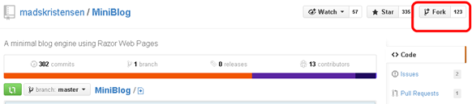

Setup MiniBlog with GitHub and Windows Azure
MiniBlog is awesome. Here’s one way to get started.
Prerequisites
Once you have those, follow these steps.
Fork MiniBlog on GitHub

{kind=link}
Setup a Windows Azure Website
{kind=link}
{kind=link}
You can now visit the blog at your chosen URL (e.g. mini-blog.azurewebsites.net). It will have the default mini-blog content, username, password, and theme.
Change Your Password
{kind=link}
My Finished Authentication Section
<authentication mode="Forms"> <forms defaultUrl="~/" loginUrl="~/views/login.cshtml" name="miniblog" timeout="10080"> <credentials passwordFormat="SHA1"> <!-- Password is "demo". Generate your hash password here http://www.stringfunction.com/sha1-hash.html --> <user name="demo" password="0898a7e586406b7f9ec379be32d45f9b33348c3e"/> </credentials> </forms> </authentication>
Further Customizations Are Up to You…
- Delete Blog Posts. Do this by deleting files that are in the “posts” directory.
- Setup Live Writer. This works beautifully right out of the box.
- Customize a Theme.
- Setup the Comments Emailer.
- Approve a Comment.
- Et Cetera…